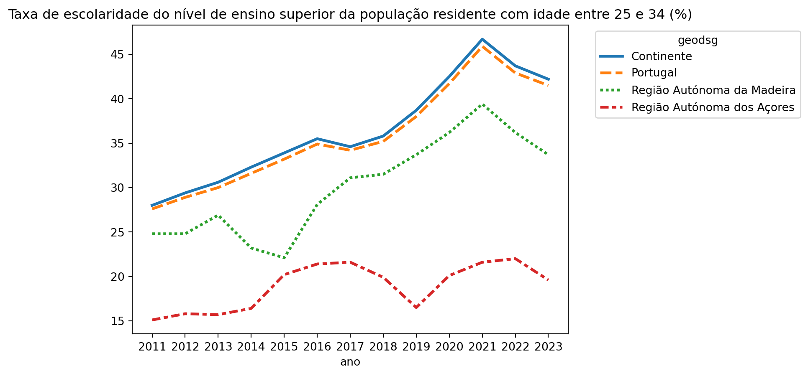
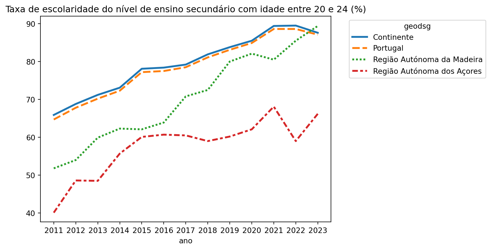
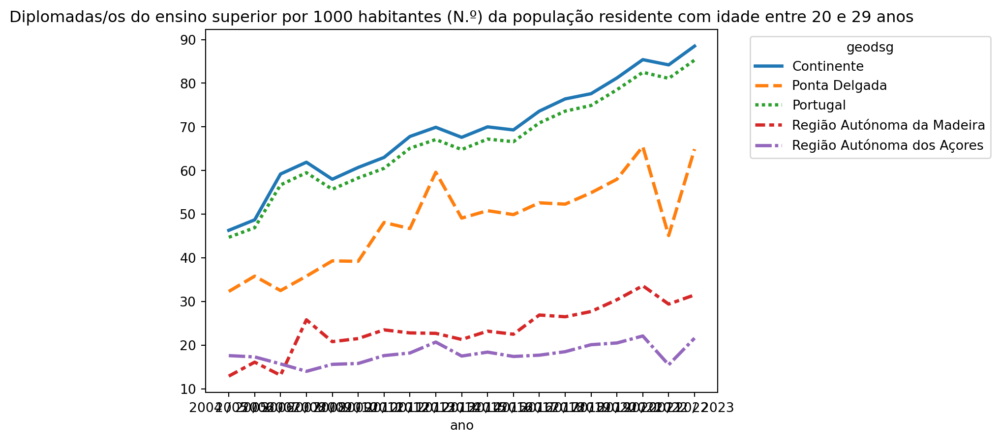

years =",".join([f"S7A{i}"for i inrange(2011, 2024)])d0011327 = {"lang": "PT","varcd": "0011327","Dim1": years,}df0011327 = get_df(d0011327)# dim3 representa o sexo; dim4 o grupo etáriodf_jovens = df0011327.loc[ df0011327["geocod"].isin(["PT", "1", "2", "3"])& df0011327["dim_3"].isin(["T"])& df0011327["dim_4"].isin(["1"])]default_plot( df=df_jovens, title="Taxa de escolaridade do nível de ensino superior da população residente com idade entre 25 e 34 (%)",)

Taxa de escolaridade do nível de ensino secundário
Taxa de escolaridade do nível de ensino secundário (Série 2021 - %)
years =",".join([f"S7A{i}"for i inrange(2011, 2024)])d0011326 = {"lang": "PT","varcd": "0011326","Dim1": years,}df_0011326 = get_df(d0011326)default_plot( df=df_0011326.loc[ df_0011326["geocod"].isin(["PT", "1", "2", "3"])& df_0011326["dim_3"].isin(["T"])& df_0011326["dim_4"].isin(["1"]) ], title="Taxa de escolaridade do nível de ensino secundário com idade entre 20 e 24 (%)",)

Diplomadas/os do ensino superior por 1000 habitantes (N.º) da população residente com idade entre 20 e 29 anos
Diplomadas/os do ensino superior por 1000 habitantes (N.º) da população residente com idade entre 20 e 29 anos por Localização geográfica (NUTS - 2013)
years =",".join([f"7A{i}_3"for i inrange(2005, 2024)])d0009267 = {"lang": "PT", "varcd": "0009267", "Dim1": years}df_0009267 = get_df(d0009267)default_plot( df=df_0009267.loc[df_0009267["geocod"].isin(["PT", "1", "2", "3", "2004203"])], title="Diplomadas/os do ensino superior por 1000 habitantes (N.º) da população residente com idade entre 20 e 29 anos",)

Proporção da população residente com 18 e mais anos de idade com pelo menos o ensino secundário completo